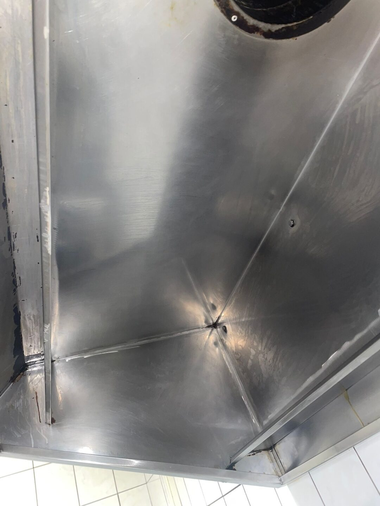
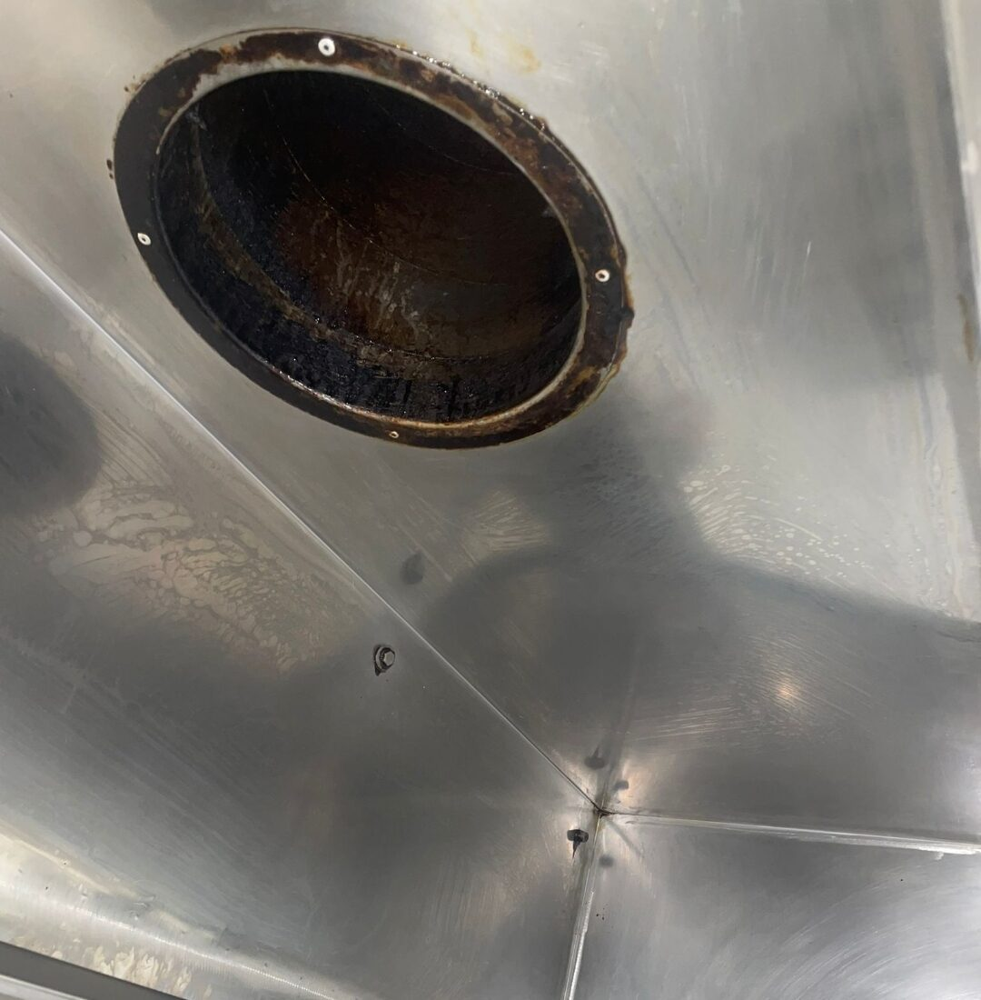
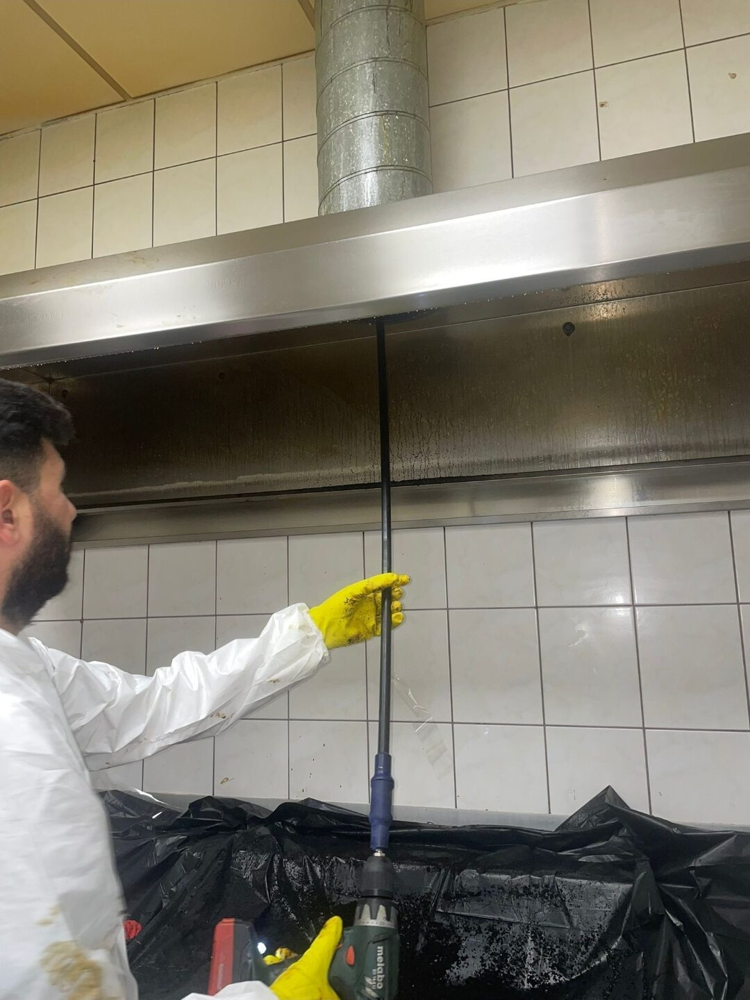
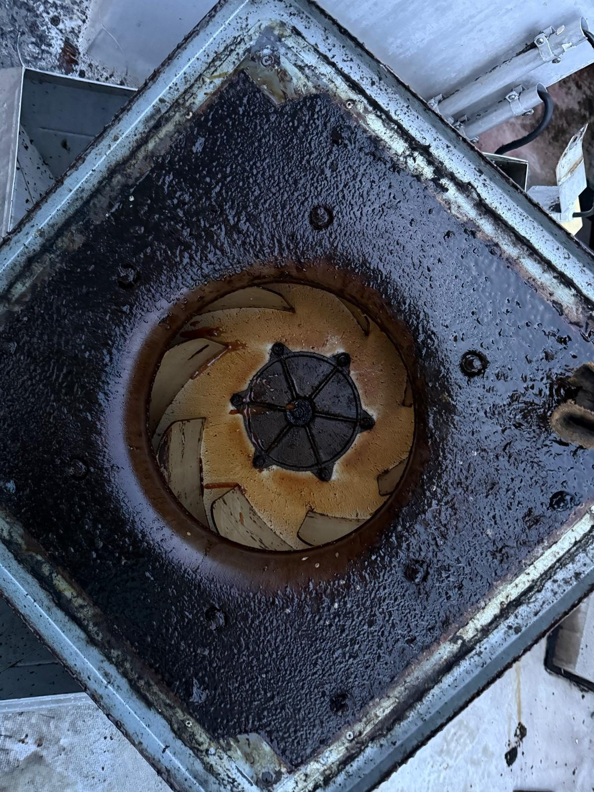
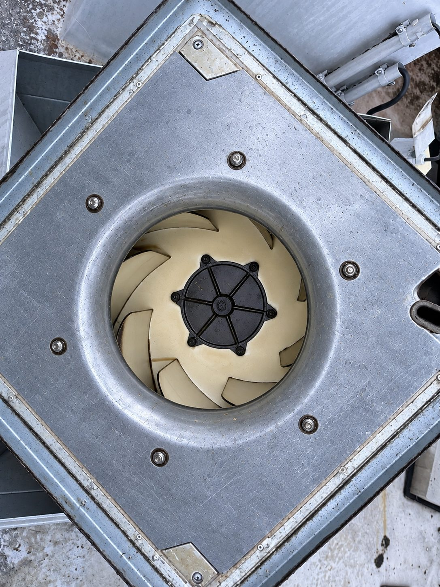
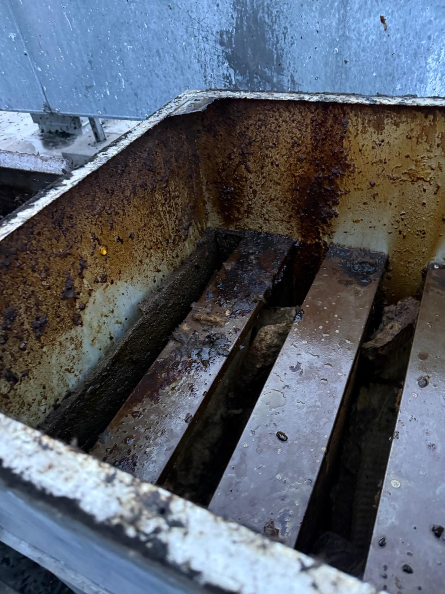
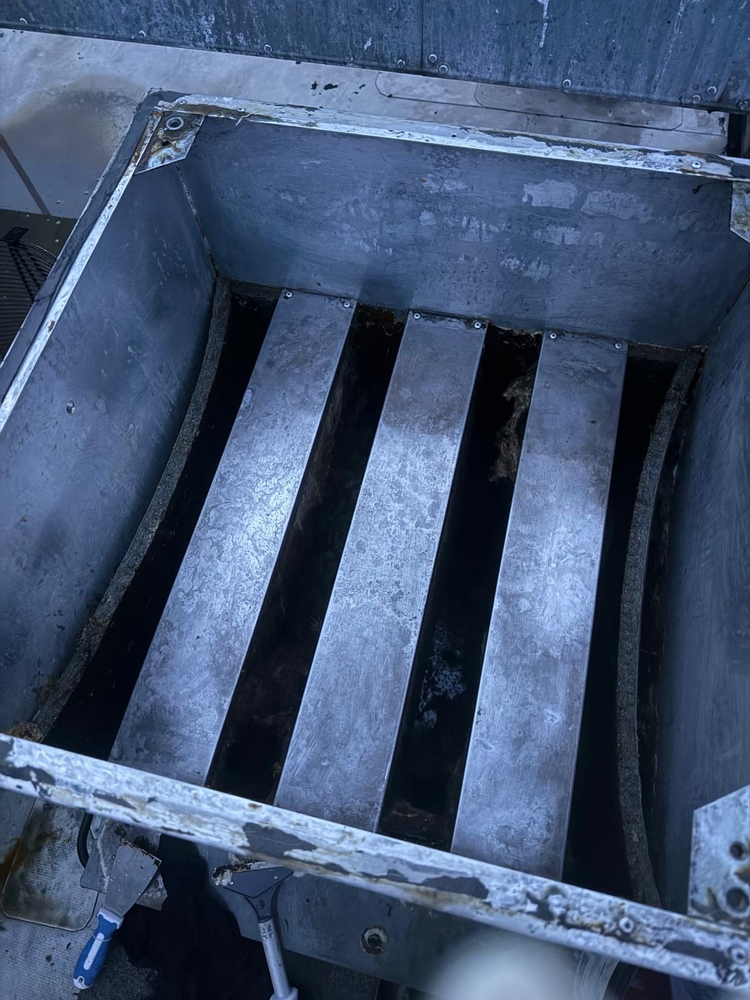
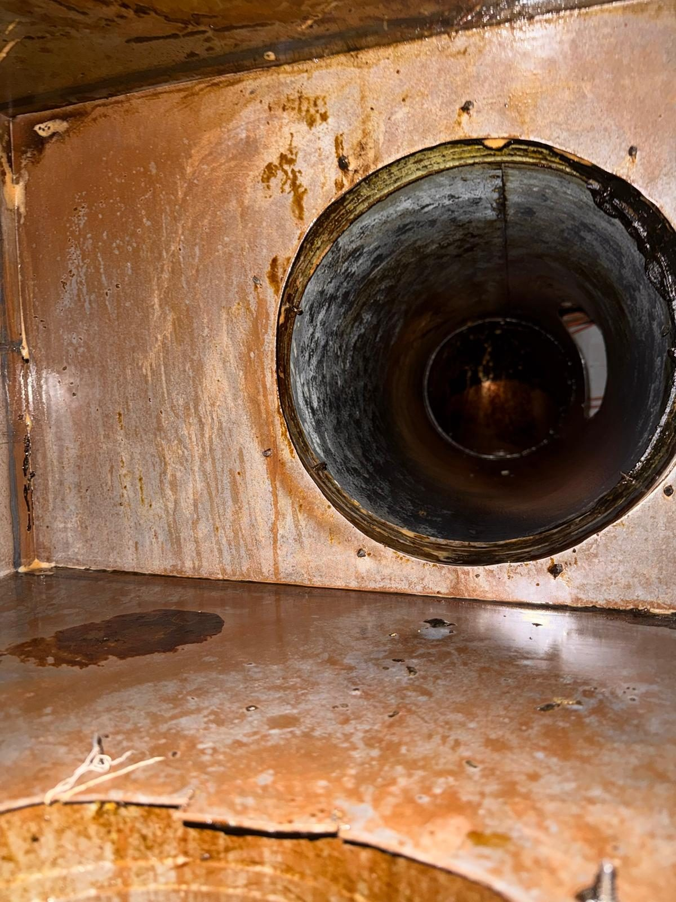
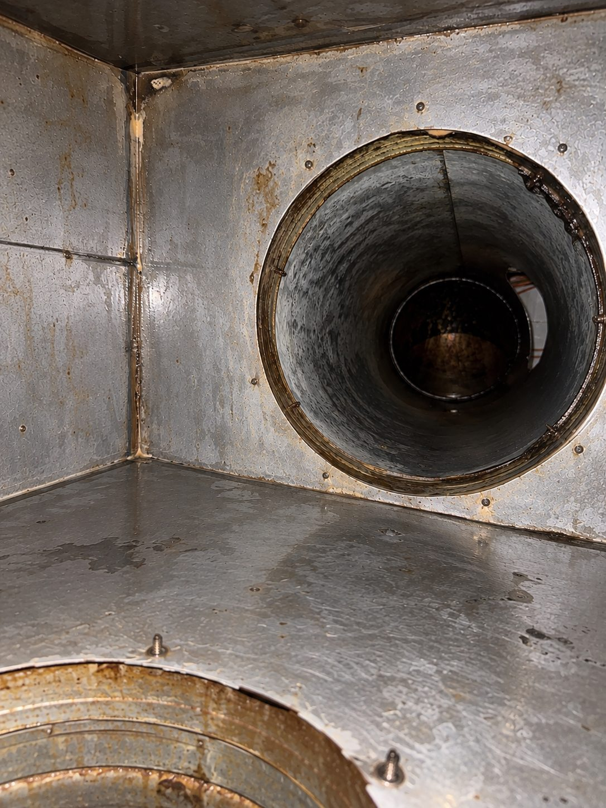

Nachher: gereinigte Abzugshaube
Fettfrei gereinigte Abzugshaube nach Abschluss der Arbeiten.
Fettfrei gereinigte Abzugshaube nach Abschluss der Arbeiten.
In gewerblichen Küchen entstehen Fett- und Schmutzablagerungen insbesondere in Abluftwegen. KAANTEC reinigt Küchenabluftanlagen, Abzugshauben, Filter, Kanäle und zugängliche Komponenten.
Angebot anfragenAlle LeistungenFett- und Schmutzablagerungen in Küchenabluftsystemen sind nicht nur unhygienisch, sondern auch ein Brandschutzrisiko. Typische Aufgaben im Bereich Großküchenreinigung:
Zuerst wird der Anlagenaufbau und das Verschmutzungsbild betrachtet. Danach werden Reinigungsumfang, Zugänge, Schutzmaßnahmen und das passende Verfahren abgestimmt.
Fetthaltige Ablagerungen in Abzugshauben, Filtern und Abluftkanälen zählen zu den größten Brandrisiken in gewerblichen Küchen. Gleichzeitig verschlechtern sie die Luftqualität in der Küche und erhöhen den Energieverbrauch der Anlage. Für Gastronomiebetriebe, Kantinen und Großküchen ist eine regelmäßige, fachgerechte Reinigung daher ein wichtiger Baustein für Betriebssicherheit, Hygiene und einen reibungslosen Küchenbetrieb – unabhängig davon, ob es sich um eine kleine Gewerbeküche oder eine große Produktionsküche handelt.

Die tatsächlich erforderliche Reinigungshäufigkeit hängt stark vom Kochaufkommen und der Art der Küche ab. Die folgende Übersicht dient nur der groben Orientierung.
| Küchentyp | Typisches Reinigungsintervall* |
|---|---|
| Kleine Gewerbeküche, geringes Kochaufkommen | ca. alle 6–12 Monate |
| Restaurant- / Hotelküche im Regelbetrieb | ca. alle 3–6 Monate |
| Großküche, Kantine, Systemgastronomie | ca. alle 1–3 Monate |
| Küchen mit hohem Frittier-/Grillanteil | häufiger, je nach Fettanfall |
*Orientierungswerte. Maßgeblich sind die tatsächliche Verschmutzung, der Küchenbetrieb sowie ggf. anwendbare Vorgaben wie VDI 2052.
Küchenabluftanlagen unterscheiden sich je nach Betriebsart deutlich in Größe und Verschmutzungsbild.
Regelmäßige Reinigung von Abzugshauben und Fettfiltern im laufenden Küchenbetrieb.
Reinigung von Großküchen mit hohem Durchsatz und entsprechend höherem Fettanfall.
Wiederkehrende Reinigungstermine für mehrere Standorte nach einheitlichem Ablauf.
Reinigung von Abluftsystemen in Großküchen mit durchgehendem oder mehrschichtigem Betrieb.
Das hängt vom Kochaufkommen und der Fettbelastung ab. Bei hohem Durchsatz ist eine häufigere Reinigung sinnvoll als bei geringer Nutzung. Wir empfehlen eine individuelle Einschätzung vor Ort.
Die Kosten hängen von Größe der Anlage, Verschmutzungsgrad und Zugänglichkeit ab. Nach kurzer Abstimmung erhalten Sie ein transparentes Angebot ohne versteckte Kosten.
Wir stimmen den Termin nach Möglichkeit auf Ihre Betriebs- und Ruhezeiten ab, etwa außerhalb der Servicezeiten oder an Ruhetagen.
Ja, je nach Bedarf reinigen wir einzelne Komponenten wie Abzugshauben oder Fettfilter oder das gesamte Abluftsystem.
Auf Wunsch dokumentieren wir den Reinigungszustand vor und nach dem Einsatz, damit Sie einen Nachweis für Ihre Unterlagen haben.
Die Bilder zeigen reale Anlagen und Reinigungsarbeiten und dienen der fachlichen Einordnung des jeweiligen Leistungsbereichs.








Beschreiben Sie kurz Ihre Anlage, den Bereich oder die Verschmutzung. Sie sprechen dabei direkt mit Ihrem festen Ansprechpartner – unverbindlich, ohne Vorabkosten und ohne Verkaufsdruck.